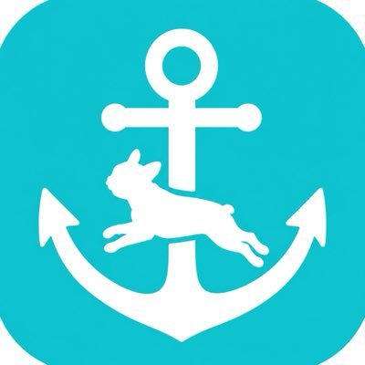

今週搭載予定のロマン機能をチラ見せ！
右クリック長押しから展開される未来感あふれる動作。なるべく直感的に使っていただけるよう、絶賛調整中です！
いずれはユーザー様ご自身でカスタマイズできるよう、調整を進めていく予定です！
v0.2.5公開しました
PDFの作業を、
PDFの作業を、
もっと自由に
ページを整える。書き込む。大切な情報を守る。
いつものPDF作業を、ひとつの無料アプリで。
- 利用料無料
- 会員登録不要
- 広告なし
PDF MARINはWindows用アプリです。
Windowsのパソコンから、このページを開いてください。
リンクをコピーしました。
操作のデモ35秒・音声なし

PDF MARIN@PDFMARIN
固定
PDF MARIN βをMicrosoft Storeで公開しました！🌊
直感的でわかりやすいUI。
使うたびにワクワクする体験。
1つ1つの機能の品質。
この3つを大切に、これからも最速でアップデートを続けていきます。
いつもたくさんのご要望・ご報告をありがとうございます😭
本日の夜、アップデート版を公開します！
ありがたいことに、最近は多くのご要望をいただいております🔥
そのぶん、修正後の動作確認や操作まわりの調整が追いついていない項目もあり、使い勝手の面で粗さが残っている箇所があるかもしれません🙇♂️
今週の連休で、いただいた要望、全体の動作確認と操作性の見直しをまとめて行う予定です！
何か少しでも気になる点があれば、お問い合わせからご連絡いただけると助かります🔥
マーケティングや広告活動などガン無視でひたすらに修正とクオリティアップに努めてる。
いいものを作れば人集まるだろ理論🫠
【追加機能】
PDFの見たい部分だけを、別ウィンドウに表示できる機能を追加しました！
図面の表や注記を横に置いたまま、別のページを確認できます。ページを何度も行き来せずに作業できます。
現在はUI、UX調整中になりますが、最新バージョンでは右クリックの中の「この紙の一部を窓に出す」から使用できます。
最近バージョンリリースしました！
不具合やUI関係を中心にかなりの量の修正を入れました🔥
印刷関係等、制約が多くご要望通りになってないところも一部ありますが、送付いただいた内容は一通り対応できたかと思います！！
また動作で不具合や使い勝手が悪い点があれば、どしどし報告をお願いします🙏🙏
たくさんのご要望や修正点をお送りいただき、ありがとうございます🙏
いただいた内容はすべて確認し、できる限り反映できるよう努めています！
基本的には修正後に動作確認を行っていますが、高度な機能については、該当する資料がないと十分に確認できない場合があります。
同じような不具合や修正点が見つかりましたら、再度教えていただけると助かります。機密情報を含まない資料であれば、該当資料と「どのような動作になってほしいか」を詳しくお送りください。
全力でご希望の動作に近づけるよう調整します🔥🔥
今後ともよろしくお願いいたします。
今週末はいただいたご要望の反映と不具合の修整、UI関係の調整を行います！
少しでも気になる点があれば箇条書きでも良いのでご連絡いただけると嬉しいです😭
ホームページ、アプリ内の問い合わせから匿名で送信できます！
不具合報告やご要望たくさんいただきありがとうございます！
ハイスピードで修正し、さらにクオリティ高めていきます！！
リポスト
【今日の人気記事】商用も無料のPDF編集ソフト「PDF MARIN」が登場、黒く塗るだけではない本物の墨消しに対応／「Claude Code」と連携するAI機能も開発中
現状は追加機能の検証とともに、基本機能を1つずつ試しながら微調整しているところです！
基本機能の使い勝手もクオリティを上げていきたいので、どんなに細かいところでもご指摘いただけると助かります🔥🔥
ご要望も多数いただきありがとうございます！！
順次対応させていただきます🔥🔥
リポスト
商用も無料のPDF編集ソフト「PDF MARIN」が登場、黒く塗るだけではない本物の墨消しに対応／「Claude Code」と連携するAI機能も開発中
窓の杜様に記事を掲載いただいたおかげでダウンロード数が増えています！😭😭
まだまだ改善点も多いPDFツールですが、有料アプリを超えるクオリティを目指して日々改修を続けていきます！
不具合や改善要望がありましたら、アプリ内、サイト内からどしどし送ってください！
細かなバグや不具合を修正した更新版をリリースしました！
返信
本機能はAI連携機能は使っておらず、一度ダウンロードすればオフラインでも動作します！
【機能紹介 墨消し】
PDFの墨消し、実際にやってみました。
黒く塗るだけじゃなく、背景色で取り除く機能も搭載してみました。
もちろん、見た目だけではなく、中身のデータも削除されています。
アカウント登録なし 完全無料
返信
#PDF
#PDFMARIN
返信
使いにくいところ、欲しい機能は、サイトの報告フォームかアプリ右上の「改善要望・問い合わせ」から。
応援していただける方は拡散、以下リンクからお布施いただけると、嬉しいです！
基本の編集はオフラインファイルはパソコン内で処理
登録せずに、すぐ使えるアカウント作成は不要
使う人の声で、進化するご意見を次の改善へ
01 — FEATURES
いつもの作業を、
これひとつで。
ちょっとした修正から、共有前の仕上げまで。
PDFに必要な機能を、ひとつにまとめました。
01
整理する
必要なページを、必要な順番に。
- ページの結合・分割・並べ替え
- 回転・削除・PDF圧縮
- パスワードの設定・解除、印刷
- ページの傾きを直す（画像を再圧縮しません）
02
書き込む・直す
伝えたいことを、PDFに直接。
- ハイライト・コメント・図形
- 文字・画像・印鑑の追加
- 文字の編集・検索、透かし
03
守る・確かめる
共有する前に、ひと手間の安心を。
- 文字・画像の墨消し
- OCRの文字を消す（不可視の文字層のみ）
- 文書の比較・重ね合わせ
- 同じ印の一括追加・寸法測定
04
変換する
いつもの形式へ、スムーズに。
- 画像・Office文書をPDFに
- PDFをExcel・Word・PPTに
- PNG・JPEGへの書き出し
02 — MADE FOR REAL WORK
大切な情報は、
共有する前に。
書類の中の氏名や連絡先など、公開したくない情報を墨消し。黒い図形を重ねるだけでなく、対象の文字や画像のデータをPDFから取り除きます。
- 文字と画像の両方に対応
- 黒塗り・背景色になじませる処理を選択
- 共有前の書類を、アプリ内で仕上げる
処理後は別名で保存し、公開するファイルの内容を
ご自身でも確認してください。
御見積書
宛名
メール
件名制作業務のお見積もり
PDF MARIN — サンプル書類
見えなくする、その先まで。
対象の文字・画像データを削除
墨消しの仕組みを表したイメージです。
図面の寸法を、PDFのまま測る。
縮尺を設定して、測りたい箇所を指定。受け取った図面の寸法を、CADを開き直さずに確認できます。
文書の違いを、見つけやすく。
文字の違いは一覧で、図の違いは重ね合わせて確認。同じひな形のPDFも、まとめて比較できます。
READY WHEN YOU ARE
次のPDF作業から、MARINで。
無料・登録不要。あなたのパソコンで、すぐに使えます。
03 — YOUR VOICE MATTERS
そのひと言が、
次の使いやすさに。
不具合のご報告も、「こんなことができたら」というアイデアも。いただいた声を、改善の参考にしています。お名前の入力は不要です。
アプリ右上の吹き出しアイコンからも送信できます。